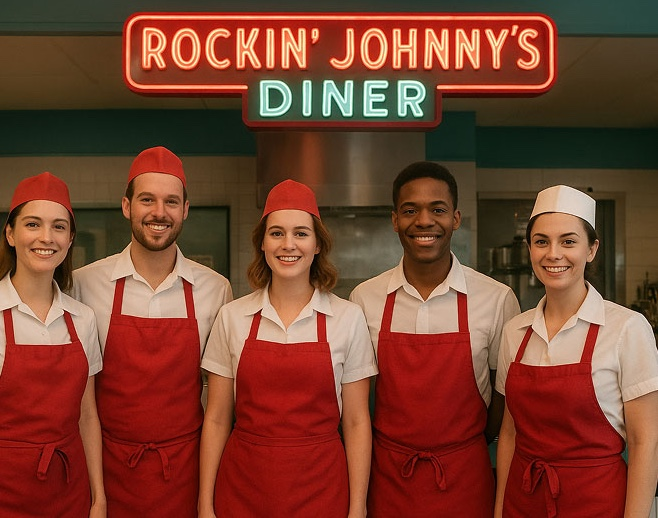

Our Story
Rockin’ Johnny’s Diner™ opened its first location in June 1991 at Westgate Shopping Centre in Ottawa, fulfilling a decade-long dream to bring back the fun, value, and warmth of classic family dining. Inspired by the golden days of jukeboxes, Marilyn Monroe, and Elvis, the diner quickly built a loyal following. Its success led to a second location in Kanata, later relocated to 486 Hazeldean Rd in 2004. Over 30 years later, Rockin’ Johnny’s remains a beloved local favorite, built on tradition, community, and loyal customers.
Customer Reviews
Lisa


A great place if you’re looking for a good diner! Their atmosphere and decorations really give you a whole throw back! It is one of our common spots we like to go for lunch.
Gregg


We love the Big Johnny breakfast! Last week the owner gave us a piece of tiramisu on the house. Very hospitable.
Desert Corner
Step into Rockin’ Johnny’s Dessert Corner — where nostalgia and indulgence come together in every bite. Enjoy thick milkshakes, golden waffles with ice cream, and homemade pies baked fresh daily. It’s the perfect spot to end a meal, share a sundae, or savor a sweet moment with friends and family. With rich flavors, retro charm, and signature Rockin’ Johnny’s warmth, dessert isn’t just the finale — it’s the highlight of your visit.